PALAIS ROYALE


FLEUVE MOUHOUN


RICHESSES SACREES
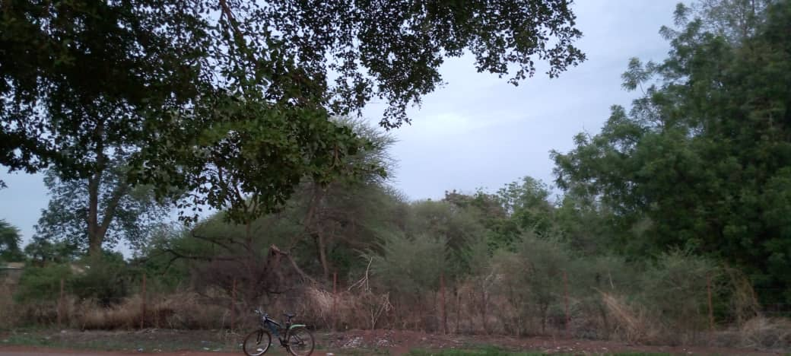 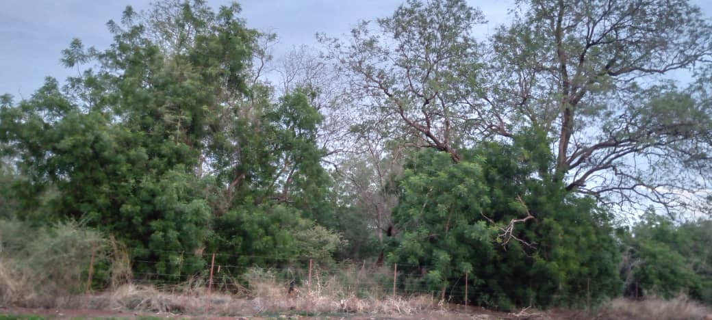 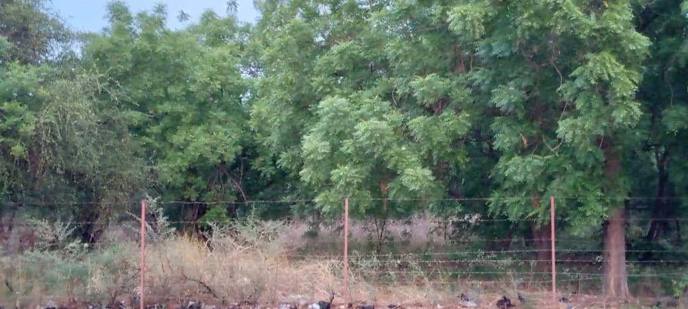 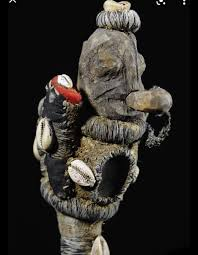
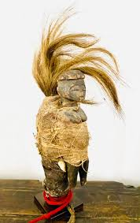
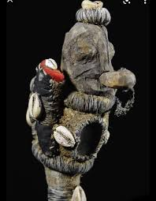
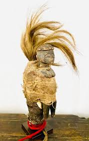

ROND POINT DE LA REVOLUTION BWA


ROND POINT NAZI BONI
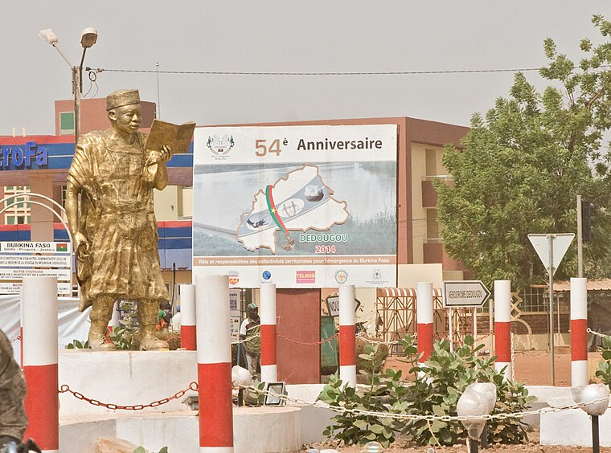


ROND POINT DE LA FEMME


METS LOCAUX
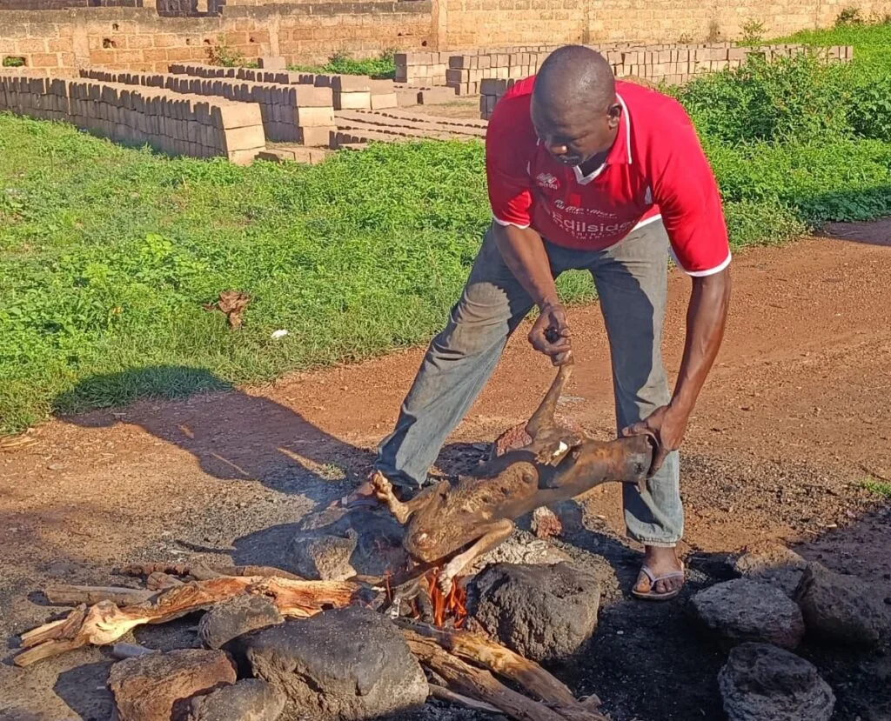 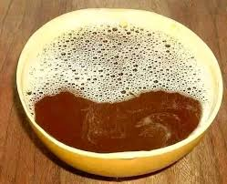 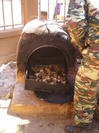
SAVOIR FAIRE


LIEUX CULTURELLES


ACTIVITES CULTURELLES